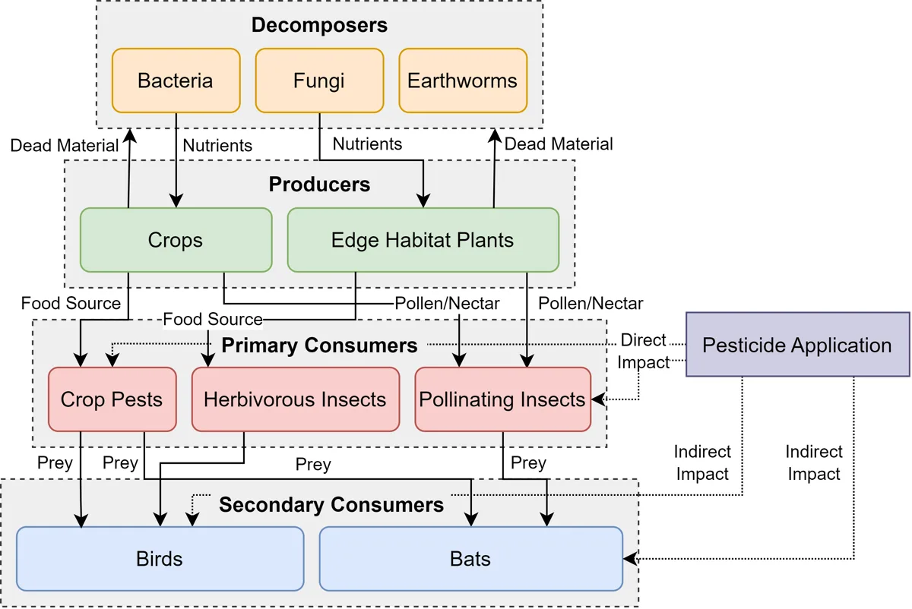
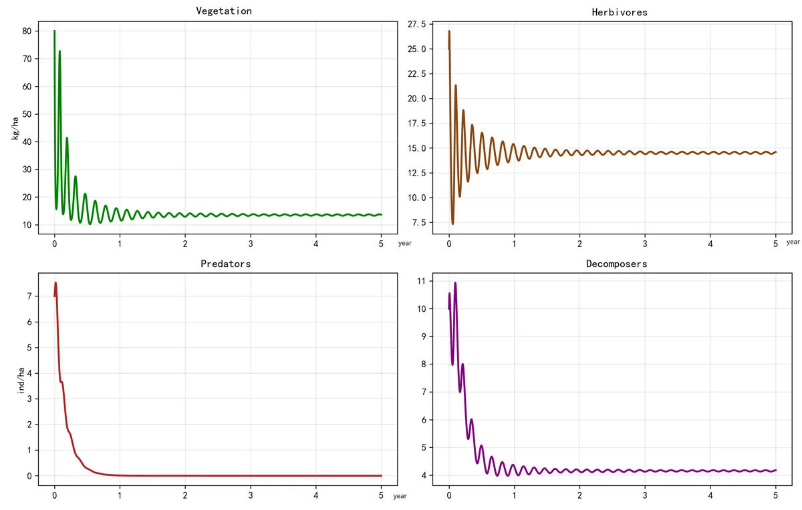
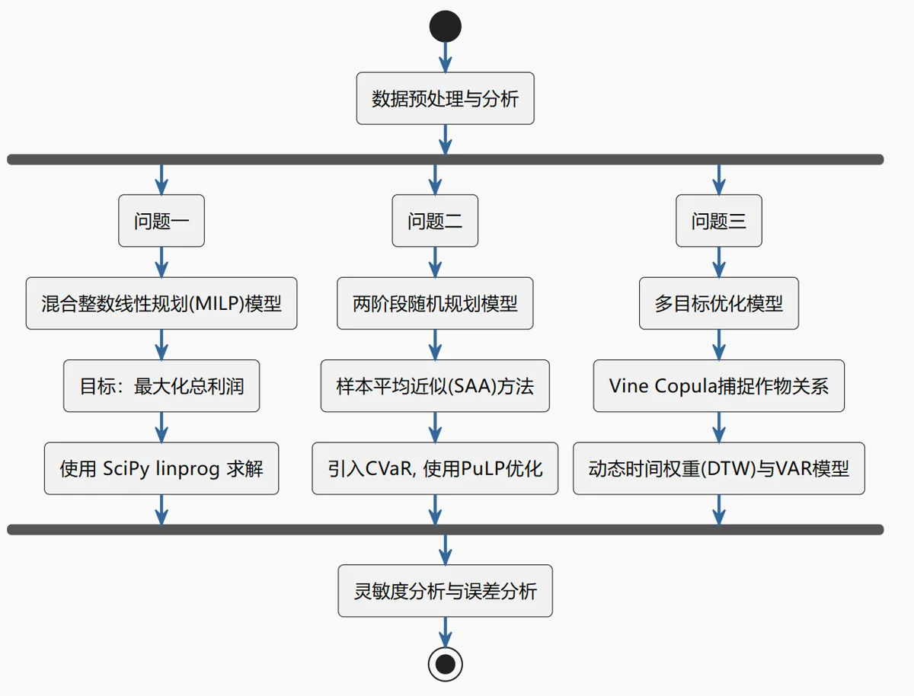
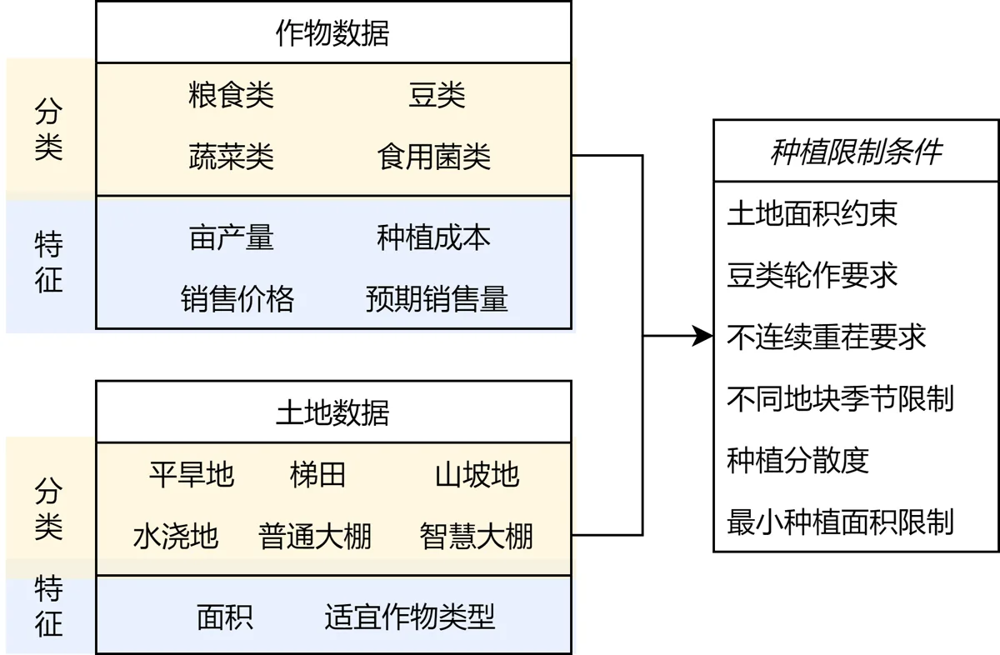
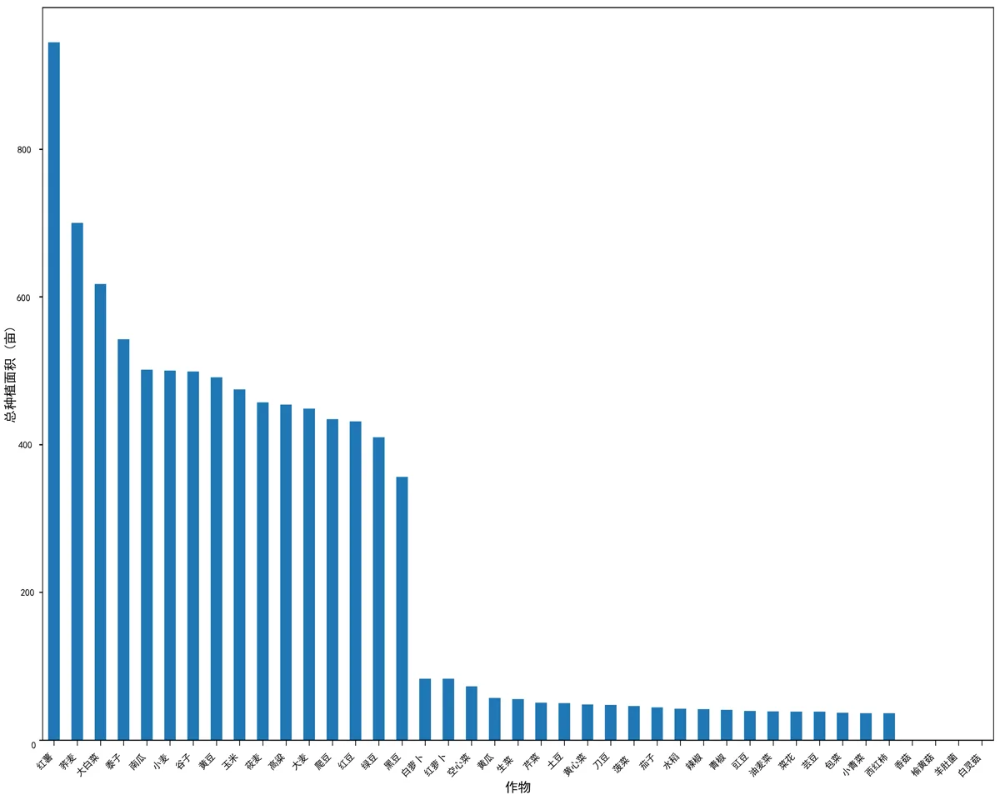
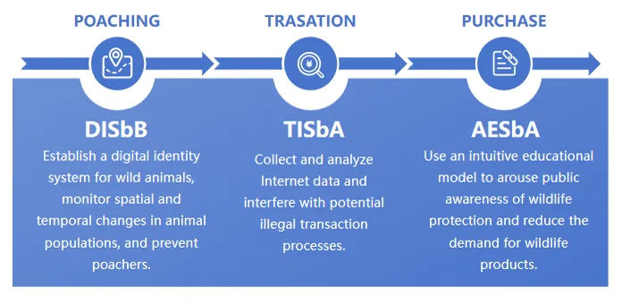
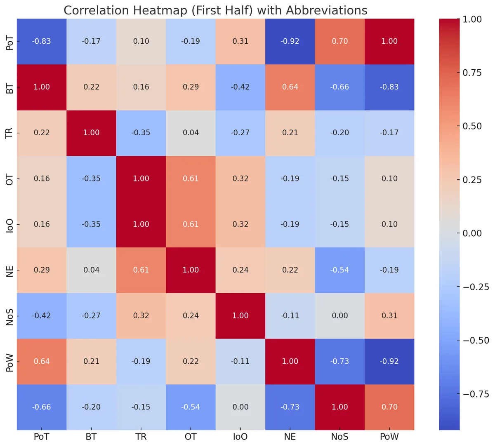
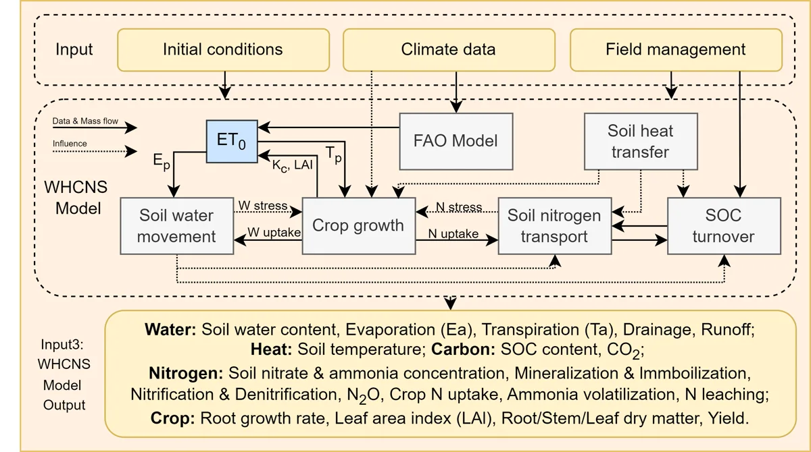
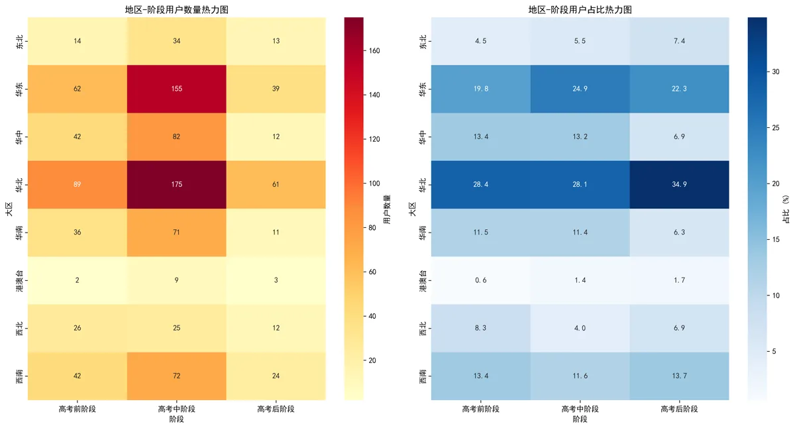
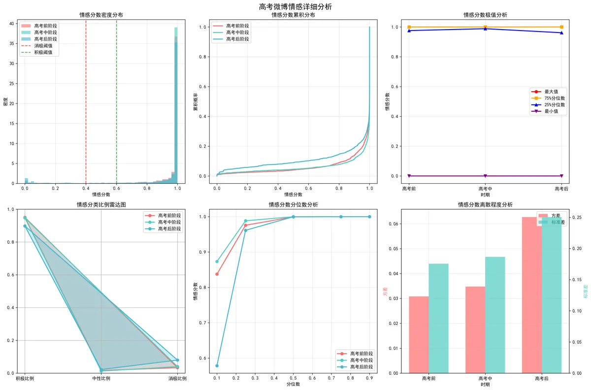

有机农业模型框架
Organic Agriculture Model Framework
用于美赛建模论文的系统框架图。
A system framework figure for a mathematical modeling paper.
Portfolio
Portfolio
这里整理展示我的汇报设计、科研绘图和视频剪辑作品。内容来自本地作品集归档，并经过压缩筛选，便于在线浏览。
A curated collection of my presentation design, research visualization, and video editing works, optimized from the local archive for fast online browsing.
面向竞赛路演的项目叙事、商业逻辑、视觉系统和答辩节奏设计。
Pitch-oriented narrative design with business logic, visual structure, and defense pacing.
围绕学业、科研、竞赛与社会实践组织个人成长叙事。
A personal academic narrative across coursework, research, competitions, and practice.
用于组会论文拆解，强调研究问题、方法结构、实验结论和可复用表达。
A paper-reading deck focused on research questions, method structure, results, and reusable explanation.
课程汇报与技术展示，覆盖人工智能气象预测、大数据系统和可视化分析。
Course and technical presentations covering AI meteorology, big-data systems, and visualization analysis.
原始 PPT 文件体积较大，当前线上版本展示主题概览和精选视觉资产；如需完整文件，可从本地归档或后续接入云盘/Release 下载。
The original PPT files are large, so this online version shows project summaries and selected visuals. Full files can be linked later through cloud storage or GitHub Releases.
用于美赛建模论文的系统框架图。
A system framework figure for a mathematical modeling paper.

展示生态系统中多角色交互关系。
A network diagram of multi-role ecosystem interactions.

模型动态过程与变量变化趋势展示。
Dynamic model behavior and variable trend visualization.

从数据处理到模型求解的整体流程表达。
An end-to-end workflow from data processing to model solving.

用结构化图形梳理数据实体和关系。
A structured diagram for data entities and relationships.

用于农业优化建模情境的结果可视化。
Result visualization for an agricultural optimization scenario.

医学影像分析任务的实验流程表达。
A workflow figure for medical image analysis experiments.

用于解释模型响应和区域关注。
A visualization for model response and regional attention.

地理主题课程与模型展示图。
A geographic model figure for coursework and presentation.

社会数据区域分布和活动强度可视化。
Regional distribution and activity intensity visualization.

围绕文本数据的情绪分布与细分分析。
Sentiment distribution and detailed analysis for text data.

市场调查项目中的策略分析视觉。
A strategy analysis visual for market research work.
竞赛/项目展示类短片预览。
A preview clip for a competition and project showcase video.
主题叙事视频剪辑预览。
A thematic narrative video editing preview.
文化主题视频剪辑预览。
A culture-themed video editing preview.
社会实践活动记录与剪辑预览。
A documentary-style preview for social practice activities.
视频展示为 18 秒压缩预览片段，保留作品风格与剪辑节奏，同时控制网页加载体积。
Each video is an 18-second compressed preview that preserves the editing style while keeping the page lightweight.